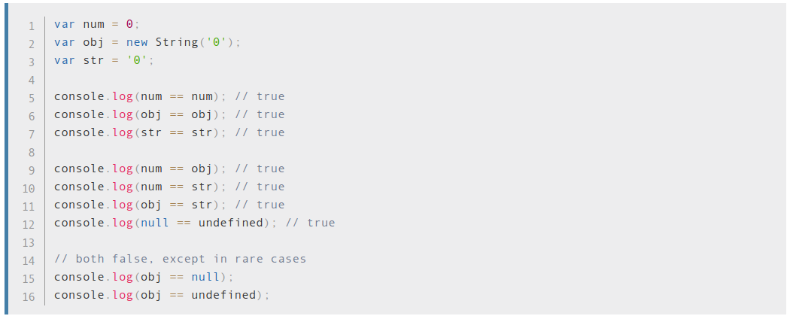
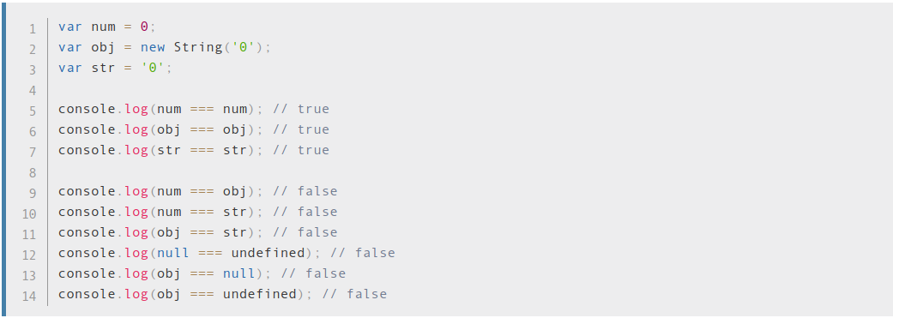

Knowledge round-up
**Javascript**
Q1:
- What are the differences between a variable that is: `null`, `undefined`?
Answer:
Null means an empty or non-existent value. Null is assigned, and explicitly means nothing.
Undefined means a variable has been declared, but the value of that variable has not yet been defined.
Q2:
What is `use strict`? what are the advantages and disadvantages to using it?
Answer:
If you put "use strict"; at the top of your code (or function), then the JS is evaluated in strict mode. Strict mode throws more errors and disables some features in an effort to make your code more robust, readable, and accurate.
* Advantages: Strict mode helps out in a couple ways.
- It catches some common coding bloopers, throwing exceptions.
- It prevents, or throws errors, when relatively “unsafe” actions are taken (such as gaining access to the global object).
- It disables features that are confusing or poorly thought out.
If a developer used a library that was in strict mode, but the developer was used to working in normal mode, they might call some actions on the library that wouldn’t work as expected. Worse, since the developer is in normal mode, they don’t have the advantages of extra errors being thrown, so the error might fail silently.
Q3:
What are the differences between `==` and `===`? Write an example for each case (if any)?
Answer:
Strict Equality Comparison (===) is only true if the operands are of the same type and the contents match.


Q4:
What is different between declaration: `var`, `const` and `let`?
var variables can be re-declared and updated
let can be updated but not re-declared.
const cannot be updated or re-declared